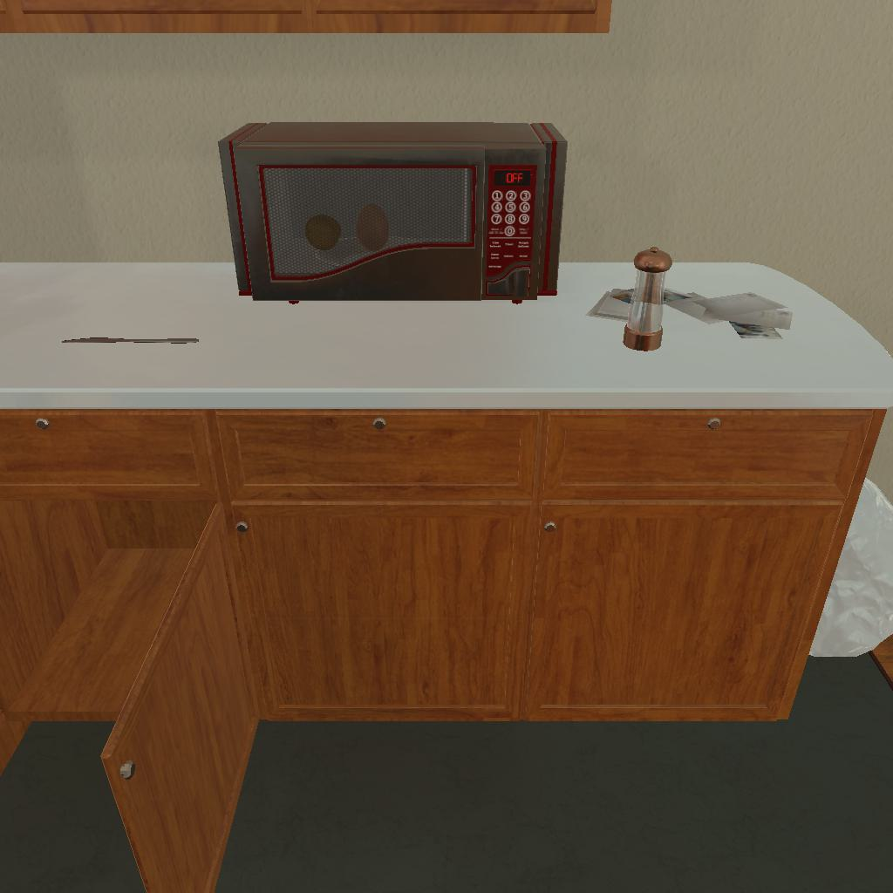

---------------------------------------------------------task: 17---------------------------------------------------------
--------------------------------------------------------------------------------------------------------------------------------------------------------------------
--------------------------------------------------------------------------------------------------------------------------------------------------------------------
Step:--------------------------------------------------------------------------11-------------------------------------------------------------------------------
----------------------------------------
VLM Prompt:
Image1:
Image2:
**Instruction**
1. Analyze the provided images to identify all visible household objects and compare the difference between images (e.h. whether the object is opened or not and taken on hand or not), focusing on those relevant to the task description "put a cool pan in stoveburner."
2. Use the analysis of images and the task hint "The agent must find an object of the desired type, pick it up, go to a fridge, cool the object with the fridge, then find the correct location to place it, and put it down there. The agent does not need to use the fridge button or open the fridge to cool the object, and the agent just needs to do action that is "cool the object with the fridge"." to answer the question: what is the most reasonable action in the choices for the task description "put a cool pan in stoveburner"?
3. Decide and write the answer using the template: The answer is: (i): , where i is the real number. If there is no desired object in images, search every place based on **Initial Observation** to find the object. And if no one is exactly correct, choose a similar answer.
**Initial Observation**
You are in the middle of a room. Looking quickly around you, you can see cabinet (1-14), countertop (1-2), microwave (1), drawer (1-5), sink (1), sinkbasin (1), coffeemachine (1), stoveburner (1-4), toaster (1), fridge (1), diningtable (1), garbagecan (1), safe (1)
**Answer Choices**
(1): go to cabinet 2
(2): go to cabinet 3
(3): go to countertop 1
(4): go to cabinet 4
(5): go to cabinet 5
(6): go to microwave 1
(7): go to cabinet 6
(8): go to drawer 1
(9): go to drawer 2
(10): go to drawer 3
(11): go to cabinet 7
(12): go to cabinet 8
(13): go to sink 1
(14): go to sinkbasin 1
(15): go to coffeemachine 1
(16): go to cabinet 9
(17): go to cabinet 10
(18): go to drawer 4
(19): go to cabinet 11
(20): go to stoveburner 1
(21): go to stoveburner 2
(22): go to stoveburner 3
(23): go to stoveburner 4
(24): go to cabinet 12
(25): go to toaster 1
(26): go to drawer 5
(27): go to countertop 2
(28): go to fridge 1
(29): go to cabinet 13
(30): go to cabinet 14
(31): go to diningtable 1
(32): go to garbagecan 1
(33): go to safe 1
(34): open cabinet 1
(35): close cabinet 1
(36): examine cabinet 1
**Answer**
Let's think step by step by following the instructions.
----------------------------------------
----------------------------------------
Original Response:
The task is to "put a cool pan in stoveburner." According to the task hint, the agent must find a pan, cool it with the fridge, and then put it on the stoveburner.
From Image1, we can see a microwave, a hammer, and some papers on the countertop, but there is no pan visible on the countertop or inside the microwave. Therefore, it is reasonable to search the cabinets or drawers for a pan as they are common storage places for such items in a household kitchen.
Image2 seems to be a close-up of the wooden texture, which does not provide any additional information about the location of the pan.
Based on the **Initial Observation**, the agent has not yet searched the cabinets or drawers where a pan might be located. Therefore, the most reasonable action would be to search the cabinets and drawers.
The answer is: (1): go to cabinet 2
----------------------------------------
----------------------------------------
>>> Refine Original VLM Response and Get Pure Action: go to cabinet 2
----------------------------------------
-----------------------------------------------------------------
Running time: 12.322951316833496 seconds
Total Money: 8.299760000000003
-----------------------------------------------------------------
-----------------------------------------------------------------
Text Observation:You arrive at loc 1. The cabinet 2 is closed.
-----------------------------------------------------------------
UNSUCCEED